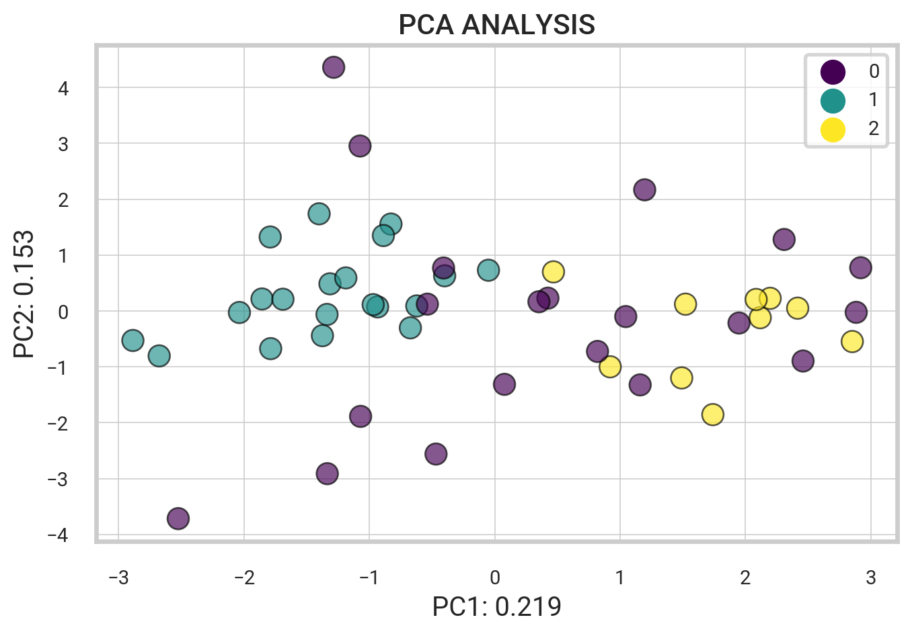

import spotipy
from spotipy.oauth2 import SpotifyClientCredentials
my_auth = SpotifyClientCredentials(client_id = "xxx", client_secret = "xxx")
sp = spotipy.Spotify(auth_manager=my_auth) # Spotify authenticationNLP Song Lyrics
Overview
Objective. The following project involves extracting and analyzing Spotify data from top playlists using the Spotify and Genius Lyrics Web API. Natural Language Processing techniques are used to process lyrics and perform sentiment analysis. K-means clustering and PCA analysis are employed to categorize songs and analyze relationships between musical features.
Extracting Spotify Data
Getting started, we want to extract data for a set of tracks within one of Spotify’s top-featured playlists. Leveraging the Spotify Web API, we can seamlessly obtain detailed data for a song, such as the artist, the album it belongs to, its release date, popularity, and audio features like danceability, energy, and tempo.
Accessing the Spotify Web API
Python libraries like spotipy offer a user-friendly way to interact with the Spotify API, offering a range of functions that streamline tasks like API authentication. To authenticate access, we provide a client ID and secret. Once authenticated, we can interact with the API and retrieve data.
Spotify’s Featured Playlists
Let’s take a look at the popular Spotify playlists. Below, the code retrieves a range of Spotify playlists and generates a dataframe containing details for each playlist.
| thumbnail | playlist_name | playlist_id | description | total | |
|---|---|---|---|---|---|
| 0 | Today’s Top Hits | 37i9dQZF1DXcBWIGoYBM5M | Shaboozey is on top of the Hottest 50! | 50 | |
| 1 | RapCaviar | 37i9dQZF1DX0XUsuxWHRQd | New music from Don Toliver, Moneybagg Yo and Central Cee. | 50 | |
| 2 | Hot Country | 37i9dQZF1DX1lVhptIYRda | Thank you to everyone who helped us heat up Spotify House at CMA Fest! Cover: Shaboozey | 50 |
Extracting Track Data From Playlist
Next, we utilize Spotify’s API to extract further details about each song within the playlist. We obtain metadata such as the track name, the artist it’s sung by, the album it belongs to, the release date, and track features such as danceability, tempo, and popularity.
def get_playlist_tracks(playlist_URI):
results = sp.playlist_tracks(playlist_URI)
tracks = results["items"]
while results["next"]:
results = sp.next(results)
tracks.extend(results["items"])
return tracksChoose a specific playlist to analyze by copying the URL from the Spotify Player interface. Using that link, the playlist_tracks method retrieves a list of IDs and corresponding artists for each track from the playlist. Specifically, we analyze Spotify’s Today’s Top Hits playlist.
Natural Language Processing
Using the data gathered from the Spotify API, we now want to extract and process lyrics for each song. This is accomplished through scraping textual lyrical data from the Genius Lyrics website. Following extraction, the lyrics are cleaned before undergoing sentiment analysis.
Scraping Song Lyrics
The lyricsgenius is a fundamental library allowing for web scraping of the Genius Lyrics website. Through the initialization of the genius variable, one can access the Genius API and retrieve the lyrics of any given song, such as “Too Many Nights” by Metro Boomin.
import lyricsgenius
genius = lyricsgenius.Genius(access_token) # Initialize Genius API
song = genius.search_song("Too Many Nights", "Metro Boomin")Searching for "Too Many Nights" by Metro Boomin...
Done.Pre-Processing Text Data
Using the genius library, we define a function to fetch the lyrics of a song given the name and artist. Once retrieved, the next step is to pre-process the lyrics. This involves a cleaning process to eliminate patterns that may hinder the overall readability. The script contains the following steps:
- Fetching Track Lyrics
- Expanding Contractions
- Converting Text to Lowercase
- Spell Checking + Censoring
- Removing Punctuations
- Tokenizing and encoding to ASCII
def clean_song_lyrics(song_name, artist_name):
# Fetch song lyrics and clean
lyrics = get_song_lyrics(song_name, artist_name)
lyrics = profanity.censor(contractions.fix(lyrics).lower(), censor_char="")
lyrics = remove_punctuation(lyrics)
# Tokenizing and encoding to ASCII
return [word.encode("ascii", "ignore").decode() for word in word_tokenize(lyrics)]Further Text Cleaning
We employ the Natural Language Toolkit (NLTK) to filter out stopwords and perform lemmatization. Removing common words like “the” condenses the text, allowing for a more thorough analysis of the lyrics’ core message. Lemmatization helps standardize text by transforming different verb variations into their most basic form.
| name | artist | lyrics | stopwords_removed | lemmatized | |
|---|---|---|---|---|---|
| 0 | Espresso | Sabrina Carpenter | ['now', 'he', 'is', 'thinking', 'about', 'me', 'eve... | ['thinking', 'every', 'night', 'sweet', 'guess', 's... | ['think', 'every', 'night', 'sweet', 'guess', 'say'... |
| 1 | BIRDS OF A FEATHER | Billie Eilish | ['i', 'want', 'you', 'to', 'stay', 'i', 'want', 'yo... | ['want', 'stay', 'want', 'stay', 'til', 'grave', 't... | ['want', 'stay', 'want', 'stay', 'til', 'grave', 't... |
| 2 | I Had Some Help (Feat. Morgan Wallen) | Post Malone | ['you', 'got', 'a', 'got', 'ta', 'nerve', 'do', 'no... | ['got', 'got', 'ta', 'nerve', 'baby', 'hit', 'curb'... | ['get', 'get', 'ta', 'nerve', 'baby', 'hit', 'curb'... |
Term Frequency Analysis
Let’s examine the most frequent words. Plotting the frequency distribution helps to determine the occurrence of the most common terms in our lyrical corpus.
Sentiment Analysis
The next process involves implementing pipelines to predict emotions and sentiment in textual content using transformer models designed for text classification and sentiment analysis. Three distinct pipelines are created, each equipped with different models.
from transformers import pipeline
classifiers = [ # Initialize sentiment classifiers
pipeline(model='bhadresh-savani/distilbert-base-uncased-emotion'),
pipeline(model='cardiffnlp/twitter-roberta-base-sentiment')
]One of the classifiers is the distilbert-base-uncased-emotion model, which detects emotions in texts like sadness, joy, love, anger, fear, and surprise. Another classifier is the roBERTa-base model “trained on 58 million tweets and fine-tuned for sentiment analysis using the TweetEval benchmark” (EMNLP 2020).
We then implement the get_lyric_sentiment function, which uses three classifiers to calculate sentiment scores from pre-processed lyrics.
# Function to perform sentiment analysis
def get_lyric_sentiment(lyrics, classifiers):
text = " ".join(lyrics)
scores = {}
for classifier in classifiers:
try:
predictions = classifier(text, truncation=True)
for prediction in predictions[0]:
scores[prediction["label"]] = prediction["score"]
except Exception as e:
print(f"Error during sentiment analysis: {e}")
return scoresBelow is a graphical representation of the results obtained from the roBERTa-base model. According to the TweetEval reference paper and official Github repository, the resulting labels 0, 1, and 2 correspond to Negative, Neutral, and Positive, respectively.
Putting it All Together
To summarize, the code efficiently collects data and performs text analysis on every song in a playlist. Specifically, it systematically processes a list of tracks and corresponding artists while simultaneously conducting a thorough cleaning procedure on the lyrics. Additionally, the program computes a sentiment score for each song based on the lyrics, indicating whether the lyrics are positive, negative, or neutral.
| name | album | artist | release_date | length | popularity | artist_pop | artist_genres | acousticness | danceability | ... | joy | love | anger | fear | surprise | LABEL_0 | LABEL_1 | LABEL_2 | NEGATIVE | POSITIVE | |
|---|---|---|---|---|---|---|---|---|---|---|---|---|---|---|---|---|---|---|---|---|---|
| 0 | Espresso | Espresso | Sabrina Carpenter | 2024-04-12 | 175459 | 95 | 87 | ['pop'] | 0.10700 | 0.701 | ... | 0.698773 | 0.159517 | 0.038075 | 0.046130 | 0.005205 | 0.058558 | 0.745153 | 0.196289 | 0.988320 | 0.011680 |
| 1 | BIRDS OF A FEATHER | HIT ME HARD AND SOFT | Billie Eilish | 2024-05-17 | 210373 | 92 | 94 | ['art pop', 'pop'] | 0.20000 | 0.747 | ... | 0.123330 | 0.007071 | 0.042765 | 0.548626 | 0.067396 | 0.112151 | 0.500842 | 0.387007 | 0.963745 | 0.036255 |
| 2 | I Had Some Help (Feat. Morgan Wallen) | I Had Some Help | Post Malone | 2024-05-10 | 178205 | 91 | 90 | ['dfw rap', 'melodic rap', 'pop', 'rap'] | 0.00757 | 0.638 | ... | 0.989839 | 0.003102 | 0.000821 | 0.000706 | 0.000557 | 0.210037 | 0.717910 | 0.072052 | 0.998456 | 0.001544 |
3 rows × 33 columns
In summary, the above code aims to collect and refine song lyrics by eliminating stopwords and conducting lemmatization. Subsequently, it employs pre-trained models for sentiment analysis to determine the prevailing emotion conveyed in the lyrics. Finally, the program compiles all this information into a dataframe for further analysis.
Correlations Matrix
After completing the initial data analysis, we proceed with generating the Pearson correlations matrix using the Pandas command df.corr(). Subsequently, we visualize the matrix using the seaborn heatmap, providing a detailed understanding of the relationships between the various variables in our dataset.
track_sentiment_df = df_final[['name', 'artist',
'acousticness', 'danceability', 'energy', 'instrumentalness',
'loudness', 'speechiness', 'tempo', 'valence',
'sadness', 'joy', 'love', 'anger', 'fear', 'surprise',
'LABEL_0', 'LABEL_1', 'LABEL_2', 'NEGATIVE', 'POSITIVE']]
# Find the pearson correlations matrix
corr = track_sentiment_df.corr(method = 'pearson')The code below produces a scatterplot that showcases the correlation between energy and fear. The x-axis represents the energy value, while the y-axis represents the fear sentiment. The size of each data point corresponds to the label indicating the neutral sentiment level, and its color represents the valence value. Moreover, each bubble contains its energy value within, allowing for a straightforward interpretation of the data.
Similarly, the scatterplot presented above utilizes the track sentiment data, comparing the energy and fear levels of the tracks based on valence and size.
Principal Component Analysis
Principal Component Analysis (PCA) is a unsupervised dimension reduction algorithm. We implement PCA on a range of track audio features as well as emotional sentiments such as sadness, joy, love, anger, and more from our data. This lets us transform the data into fewer columns, reducing the dimensionality without losing significant information.
After performing PCA on the data, we apply it to generate a biplot depicting the relationship between the features and tracks. This biplot quickly reveals any discernible patterns and clusters within the dataset.
X_SMALL = df_final[['acousticness', 'danceability', 'energy', 'speechiness',
'tempo', 'valence', 'sadness', 'joy', 'love', 'anger',
'fear', 'surprise', 'name', 'LABEL_0', 'LABEL_1', 'LABEL_2']]We use the PCA and StandardScaler modules from the sklearn library. First, we select the first 12 columns from our data subset and form a matrix, named \(X_i\). We then standardize the data. Next, we apply PCA to the standardized data, \(X_{st}\). Lastly, we save the obtained loadings and eigenvalues.
from sklearn.decomposition import PCA
from sklearn.preprocessing import StandardScaler
# Standard scaling track audio features
X_i = X_SMALL.iloc[:,0:12]
X_st = StandardScaler().fit_transform(X_i)
# Apply PCA to scaled data
pca = PCA()
pca_out = pca.fit(X_st)
# component loadings
loadings = pca_out.components_
# get eigenvalues (variance explained by each PC)
pca_out.explained_variance_array([2.61151346e+00, 1.81152715e+00, 1.33922867e+00, 1.31783191e+00,
1.14442842e+00, 9.59251161e-01, 8.69078284e-01, 7.57688171e-01,
6.51011595e-01, 4.99982382e-01, 2.88458789e-01, 5.55891815e-15])Next, the following code uses the PCA() function to calculate the PCA scores of the standardized data set, \(X_{st}\).
features = X_i.columns.values # Labels
components = pca.fit_transform(X_st) # PCA Score
loadings = pca_out.components_.T * np.sqrt(pca_out.explained_variance_)A biplot is generated based on the PCA scores and loadings, and the column names of the \(X_i\) data frame are used as labels for the plot. The variance explained by the first two principal components are also displayed on the plot.
Below is a preview of all the PCA clustered groups.
| PC1 | PC2 | PC3 | PC4 | PC5 | PC6 | PC7 | PC8 | PC9 | PC10 | PC11 | PC12 | |
|---|---|---|---|---|---|---|---|---|---|---|---|---|
| 0 | -1.255327 | -1.166254 | -0.226468 | -0.095443 | 0.512157 | 0.251976 | 0.191732 | 0.633547 | -0.228078 | 0.038155 | -0.080939 | -1.867852e-08 |
| 1 | 1.106221 | -0.054969 | 0.644421 | 2.079536 | 0.566187 | 0.346209 | 0.449961 | -0.656690 | -0.188145 | 0.652280 | -0.584806 | -9.989372e-09 |
| 2 | -1.720206 | -1.648513 | 0.983419 | -0.934156 | -0.127514 | -0.277883 | -0.134462 | 0.671739 | -0.405604 | -0.024465 | -0.029920 | 2.470032e-08 |
| 3 | -1.855349 | -1.099255 | 0.249102 | -0.101427 | -0.526975 | 0.617712 | -0.364594 | -0.379423 | 0.116606 | 0.561498 | 0.613963 | -2.379668e-08 |
| 4 | -1.652668 | 0.276595 | 0.710064 | -0.661191 | -0.173154 | 0.807907 | -0.393728 | 0.078094 | 0.430236 | 0.810153 | -0.139121 | -1.180899e-07 |
The variance ratios for the PCA output and the cumulative sum of the explained variance ratios are printed below. Specifically, the array displayed represents the amount of variability explained by each component.
print(pca_out.explained_variance_ratio_)
print('----')
print(pca_out.explained_variance_ratio_.cumsum())[2.13184773e-01 1.47879768e-01 1.09324790e-01 1.07578115e-01
9.34227281e-02 7.83062172e-02 7.09451660e-02 6.18520956e-02
5.31438037e-02 4.08148883e-02 2.35476562e-02 4.53789237e-16]
----
[0.21318477 0.36106454 0.47038933 0.57796744 0.67139017 0.74969639
0.82064156 0.88249365 0.93563746 0.97645234 1. 1. ]The loading vectors help visualize the relationship between the original variables and their respective components. These vectors represent the weights of the variables within a mathematical equation used to generate the principal components.
df_weights = pd.DataFrame(pca_out.components_.T, columns=df_pca.columns, index=X_i.columns)
df_weights| PC1 | PC2 | PC3 | PC4 | PC5 | PC6 | PC7 | PC8 | PC9 | PC10 | PC11 | PC12 | |
|---|---|---|---|---|---|---|---|---|---|---|---|---|
| acousticness | 0.358283 | 0.104049 | -0.063878 | -0.015859 | -0.243579 | 0.608952 | 0.198491 | 0.191712 | 0.183645 | -0.538147 | -0.163837 | 3.664172e-08 |
| danceability | -0.419590 | 0.341618 | -0.156759 | 0.092896 | 0.004792 | 0.292212 | -0.069513 | -0.301191 | -0.023869 | 0.195202 | -0.674096 | -8.094544e-09 |
| energy | -0.270231 | -0.046466 | 0.304788 | -0.412576 | 0.311609 | -0.019222 | 0.164241 | 0.487791 | -0.429709 | -0.206228 | -0.268583 | 1.015555e-08 |
| speechiness | -0.114283 | 0.578280 | -0.083071 | 0.024459 | -0.092389 | -0.160265 | -0.139969 | -0.251255 | -0.439345 | -0.482905 | 0.319171 | 2.271286e-08 |
| tempo | 0.130552 | 0.161948 | 0.453147 | -0.348590 | -0.047742 | -0.134351 | -0.641145 | -0.056571 | 0.386878 | -0.128357 | -0.170662 | -1.620258e-08 |
| valence | -0.398480 | 0.046868 | 0.210691 | -0.100710 | 0.071207 | 0.636045 | -0.162503 | 0.042369 | 0.056184 | 0.217912 | 0.544074 | 6.463812e-09 |
| sadness | 0.411517 | 0.069542 | -0.103748 | -0.507468 | 0.176455 | 0.152737 | 0.106654 | -0.342045 | -0.210846 | 0.246653 | 0.021472 | -5.185950e-01 |
| joy | -0.418205 | -0.416517 | 0.031391 | -0.013577 | -0.399918 | -0.076954 | -0.005649 | -0.136880 | 0.053904 | -0.294254 | -0.021520 | -6.130827e-01 |
| love | -0.077398 | -0.038721 | -0.521160 | 0.095973 | 0.616436 | 0.009760 | -0.330022 | 0.197886 | 0.233632 | -0.250531 | 0.036381 | -2.546696e-01 |
| anger | -0.110124 | 0.569632 | 0.025421 | -0.008922 | -0.118327 | -0.225066 | 0.334545 | 0.396342 | 0.385516 | 0.203134 | 0.085264 | -3.631076e-01 |
| fear | 0.265825 | 0.054301 | 0.320958 | 0.592996 | 0.018068 | 0.122371 | -0.293411 | 0.241383 | -0.354671 | 0.149231 | -0.099510 | -3.925677e-01 |
| surprise | -0.025291 | 0.015145 | 0.484562 | 0.264578 | 0.492208 | -0.012556 | 0.391660 | -0.419788 | 0.242568 | -0.242659 | 0.013572 | -6.614867e-02 |
K Means Clustering
“Clustering is a Machine Learning technique that involves the grouping of data points. Given a set of data points, we can use a clustering algorithm to classify each data point into a specific group. In theory, data points that are in the same group should have similar properties and/or features, while data points in different groups should have highly dissimilar properties and/or features. Clustering is a method of unsupervised learning and is a common technique for statistical data analysis used in many fields.
In the next step, we utilize K-means clustering on the dimensionally reduced data to investigate patterns and similarities among track audio features and sentiment. K-means is an unsupervised learning algorithm that aims to identify the optimal number of clusters (\(K\)) to group the data best. To help find the best \(K\) for the data, we employ the Elbow method.
Using K Means clustering, we choose to break the playlist into 3 smaller playlists.
As shown below, we employ the KMeans algorithm, obtained from the sklearn.cluster library, to cluster a collection of songs into distinct categories based on track features, such as their energy levels and sound qualities. Using three clusters, we apply this algorithm on the track features from the “playlist_tracks” subset of data, dropping the “artist” and “name” columns.
from sklearn.cluster import KMeans
playlist_tracks = df_final[['name','acousticness','danceability','energy', 'liveness',
'instrumentalness','speechiness','valence',
'sadness', 'joy', 'love', 'anger', 'fear', ]]#'surprise'
kmeans = KMeans(n_clusters = 3)
kmeans.fit(playlist_tracks.drop(['name'], axis = 1))KMeans(n_clusters=3)In a Jupyter environment, please rerun this cell to show the HTML representation or trust the notebook.
On GitHub, the HTML representation is unable to render, please try loading this page with nbviewer.org.
KMeans(n_clusters=3)
Visualizing the Clusters
Moving forward, let’s look at differences in the audio features of each group.
from sklearn.preprocessing import StandardScaler
scaler = StandardScaler()
scaler.fit(playlist_tracks.drop(['name'], axis = 1))
scaled_data = scaler.transform(playlist_tracks.drop(['name'], axis = 1))Code
from sklearn.decomposition import PCA
pca = PCA(n_components =2)
pca.fit(scaled_data)
data_pca = pca.transform(scaled_data)Text(0, 0.5, 'PC2: 0.150')
playlist_tracks['group'] = list(kmeans.labels_)
playlist_tracks = playlist_tracks.astype({'group': str})
means = pd.DataFrame(index = range(0,3),
columns = list(playlist_tracks[playlist_tracks['group'] == '0'].describe().loc['mean'].index))
means.iloc[0] = playlist_tracks[playlist_tracks['group'] == '0'].describe().loc['mean']
means.iloc[1] = playlist_tracks[playlist_tracks['group'] == '1'].describe().loc['mean']
means.iloc[2] = playlist_tracks[playlist_tracks['group'] == '2'].describe().loc['mean']
means| acousticness | danceability | energy | liveness | instrumentalness | speechiness | valence | sadness | joy | love | anger | fear | |
|---|---|---|---|---|---|---|---|---|---|---|---|---|
| 0 | 0.170163 | 0.739071 | 0.605643 | 0.151 | 0.004429 | 0.094143 | 0.544786 | 0.077204 | 0.119145 | 0.111349 | 0.317363 | 0.345699 |
| 1 | 0.326517 | 0.574083 | 0.592333 | 0.136058 | 0.000019 | 0.059392 | 0.416917 | 0.756223 | 0.061522 | 0.060179 | 0.072008 | 0.046813 |
| 2 | 0.126082 | 0.714348 | 0.666304 | 0.145591 | 0.042423 | 0.0501 | 0.650652 | 0.047924 | 0.825909 | 0.04525 | 0.057317 | 0.020473 |
Organized Songs in a Playlist
K-means is a clustering algorithm that tries to partition a set of points into K sets (clusters) such that the points in each cluster tend to be near each other. It is unsupervised because the points have no external classification.
K means clustering is an unsupervised machine learning algorithm. This algorithm is used to divide the existing data points into classes. It is an eager learner algorithm, so we can’t skip the training phase.
Below, we import the Python pandas, matplotlib.pyplot, and sklearn libraries to our project. These tools help us perform various operations such as clustering, decomposition, and data visualization.
We then obtain a list of songs including their name and various attributes such as acousticness, danceability, energy, instrumentalness, liveness, speechiness, tempo, valence, and loudness. Next, we gather helpful insights about these songs using the’ describe’ function.
import pandas as pd
import matplotlib.pyplot as plt
from sklearn import cluster, decomposition
songs = df_final[['name','acousticness', 'danceability', 'energy', 'instrumentalness',
'liveness', 'speechiness', 'valence', 'loudness_scaled',
'anger', 'love', 'sadness']]
songs.describe()| acousticness | danceability | energy | instrumentalness | liveness | speechiness | valence | loudness_scaled | anger | love | sadness | |
|---|---|---|---|---|---|---|---|---|---|---|---|
| count | 49.000000 | 49.000000 | 49.000000 | 49.000000 | 49.000000 | 49.000000 | 49.000000 | 49.000000 | 49.000000 | 49.000000 | 49.000000 |
| mean | 0.187762 | 0.687061 | 0.630857 | 0.021183 | 0.144802 | 0.064959 | 0.563163 | 0.641806 | 0.135214 | 0.067792 | 0.229751 |
| std | 0.196114 | 0.149292 | 0.134388 | 0.125934 | 0.099713 | 0.050306 | 0.232433 | 0.213949 | 0.233599 | 0.163837 | 0.333629 |
| min | 0.000938 | 0.264000 | 0.386000 | 0.000000 | 0.029700 | 0.026400 | 0.155000 | 0.000000 | 0.000206 | 0.000193 | 0.001261 |
| 25% | 0.035100 | 0.625000 | 0.507000 | 0.000000 | 0.089400 | 0.036800 | 0.337000 | 0.565960 | 0.003334 | 0.003102 | 0.015780 |
| 50% | 0.107000 | 0.689000 | 0.640000 | 0.000002 | 0.110000 | 0.050900 | 0.604000 | 0.686931 | 0.038075 | 0.006816 | 0.052300 |
| 75% | 0.261000 | 0.787000 | 0.729000 | 0.000051 | 0.151000 | 0.068700 | 0.738000 | 0.785078 | 0.127450 | 0.029717 | 0.314458 |
| max | 0.799000 | 0.943000 | 0.946000 | 0.879000 | 0.549000 | 0.270000 | 0.945000 | 1.000000 | 0.993250 | 0.992157 | 0.998848 |
Extracting the song labels from the dataset is the first crucial step. Then, we must select the appropriate features that will serve as inputs for the Affinity Propagation clustering algorithm from the scikit-learn library. During the clustering process, a preference value of -200 is used to ensure optimal performance. Once the data is inputted, the algorithm is trained to achieve the desired outcome.
labels = songs.values[:,0]
X = songs.values[:,1:12]
kmeans = cluster.AffinityPropagation()
kmeans.fit(X)AffinityPropagation()In a Jupyter environment, please rerun this cell to show the HTML representation or trust the notebook.
On GitHub, the HTML representation is unable to render, please try loading this page with nbviewer.org.
AffinityPropagation()
The script below utilizes a dictionary called “predictions” to keep track of the outcomes of a comparison process between two lists: “kmeans.predict(X)” and “labels”. For each new value, a unique key is generated in the dictionary with the corresponding value from the “labels” list appended to the key’s list of values.
After sorting all values into their designated keys, we proceed to display each key alongside its relevant values. The output displays each category and the corresponding songs it contains.
predictions = {}
for p,n in zip(kmeans.predict(X),labels):
if not predictions.get(p):
predictions[p] = []
predictions[p] += [n]
for p in predictions:
print("Category",p)
print("-----")
for n in predictions[p]:
print(n)
print("")Category 0
-----
Espresso
I Had Some Help (Feat. Morgan Wallen)
Too Sweet
MILLION DOLLAR BABY
A Bar Song (Tipsy)
LUNCH
i like the way you kiss me
Please Please Please
End of Beginning
Houdini
Good Luck, Babe!
Belong Together
Slow It Down
Water
Miles On It
yes, and?
Tell Ur Girlfriend
Santa
Whatever
Illusion
I Don't Wanna Wait
Jump
Magnetic
Category 1
-----
BIRDS OF A FEATHER
Fortnight (feat. Post Malone)
Scared To Start
Gata Only
Category 3
-----
we can't be friends (wait for your love)
Beautiful Things
Not Like Us
Pink Skies
TEXAS HOLD 'EM
One Of The Girls (with JENNIE, Lily Rose Depp)
I Remember Everything (feat. Kacey Musgraves)
Category 2
-----
Lose Control
I Can Do It With a Broken Heart
Saturn
Austin
Stargazing
Stick Season
Feel It - From The Original Series “Invincible”
obsessed
Category 5
-----
greedy
BAND4BAND (feat. Lil Baby)
Category 4
-----
Nasty
one of wun
redrum
Category 6
-----
Lovin On Me
Category 7
-----
CHIHIRO
The script successfully categorized the playlist into 6 distinct groups based on shared features, resulting in a diverse selection of songs within each category.
Supervised Learning: Similarity Search
Below, we create a query to retrieve similar elements based on Euclidean distance. In mathematics, the Euclidean distance between two points is the length of the line segment between the two points. In this sense, the closer the distance is to 0, the more similar the songs are.
KNN Algorithm
K-nearest neighbors is a classification (or regression) algorithm that in order to determine the classification of a point, combines the classification of the K nearest points. It is supervised because you are trying to classify a point based on the known classification of other points.
To obtain a string search for a song, utilize the getMusicName function shown below, which returns the artist and song name.
The k-Nearest Neighbors (KNN) algorithm searches for k similar elements based on a query point at the center within a predefined radius. We execute the KNN algorithm using the knnQuery function defined below, which takes a query point, a set of characteristic points, and a value for k. It computes the sum of squared differences between each data and query point, followed by the calculation of the Euclidean distance between them. The function then arranges the points by distance and returns the k closest and farthest points.
The querySimilars function then removes the query point and executes the KNN algorithm on the remaining points, returning the k most similar points to the query point based on the specified columns, function, and parameter.
# Get a song string search
def getMusicName(elem):
return f"{elem['artist']} - {elem['name']}"
def knnQuery(queryPoint, arrCharactPoints, k):
queryVals = queryPoint.tolist()
distVals = []
# Copy of dataframe indices and data
tmp = arrCharactPoints.copy(deep = True)
for index, row in tmp.iterrows():
feat = row.values.tolist()
# Calculate sum of squared differences
ssd = sum(abs(feat[i] - queryVals[i]) ** 2 for i in range(len(queryVals)))
# Get euclidean distance
distVals.append(ssd ** 0.5)
tmp['distance'] = distVals
tmp = tmp.sort_values('distance')
# K closest and furthest points
return tmp.head(k).index, tmp.tail(k).index
# Execute KNN removing the query point
def querySimilars(df, columns, idx, func, param):
arr = df[columns].copy(deep = True)
queryPoint = arr.loc[idx]
arr = arr.drop([idx])
return func(queryPoint, arr, param)KNN Query Example.
We now establish a function that creates customized query points and alters the data columns, allowing for further exploration of various options. To illustrate, the code snippet below chooses a particular group of song features and then seeks out the top k values within that feature set that are equal to one.
To begin, we create a scaler utilizing the preprocessing library from sklearn. It’s worth noting that all the feature values fall within the range of 0 and 1, except for loudness. As a result, we need to scale loudness to conform to the same range.
Let’s search for \(k=3\) similar songs to a query point \(\textrm{songIndex} = 6\).
# Select song and column attributes
songIndex = 4 # query point
columns = ['acousticness', 'danceability', 'energy', 'instrumentalness', 'liveness',
'loudness_scaled', 'tempo',
'speechiness', 'valence']
# Set query parameters
func, param = knnQuery,3
# Implement query
response = querySimilars(df, columns, songIndex, func, param)
print("---- Query Point ----")
print(getMusicName(df.loc[songIndex]))
print('---- k = 3 similar songs ----')
for track_id in response[0]:
track_name = getMusicName(df.loc[track_id])
print(track_name)
print('---- k = 3 nonsimilar songs ----')
for track_id in response[1]:
track_name = getMusicName(df.loc[track_id])
print(track_name)---- Query Point ----
Tommy Richman - MILLION DOLLAR BABY
---- k = 3 similar songs ----
Gunna - one of wun
Central Cee - BAND4BAND (feat. Lil Baby)
Lay Bankz - Tell Ur Girlfriend
---- k = 3 nonsimilar songs ----
Taylor Swift - Fortnight (feat. Post Malone)
Shaboozey - A Bar Song (Tipsy)
Zach Bryan - I Remember Everything (feat. Kacey Musgraves)The code below implements the same idea as above, but queries each track in a given playlist instead of a single defined query point.
To keep track of the number of songs that are similar and those that are not, we use two dictionaries: similar_count” and “nonsimilar_count”. To do this, we create a loop that goes through the data, running the querySimilars function on each track. A loop then processes “similar” and “non-similar” songs from the results of the query, stored in the “response” variable. If a “similar” song is found, its name is retrieved using the getMusicName function. The song’s name is then added to the “similar_count” dictionary with a count of 1, or incremented if it already exists.
The same process is repeated for the “non-similar” songs, except the count is added to the “nonsimilar_count” dictionary instead.
similar_count = {} # Similar songs count
nonsimilar_count = {} # Non-similar songs count
for track_index in df.index:
# Implement query
response = querySimilars(df, columns, track_index, func, param)
# Get similar songs
for similar_index in response[0]:
track = getMusicName(df.loc[similar_index])
if track in similar_count:
similar_count[track] += 1
else:
similar_count[track] = 1
# Get non-similar songs
for nonsimilar_index in response[1]:
track = getMusicName(df.loc[nonsimilar_index])
if track in nonsimilar_count:
nonsimilar_count[track] += 1
else:
nonsimilar_count[track] = 1Next, we display both the non-similar and similar songs with their respective track name and count.
nonsimilar = dict(sorted(nonsimilar_count.items(), key=lambda item: item[1], reverse=True))
print('---- NON SIMILAR SONG COUNTS ----')
for track_name, track_count in nonsimilar.items():
if track_count >= 8:
print(track_name, ':', track_count)
similar = dict(sorted(similar_count.items(), key=lambda item: item[1], reverse=True))
print('\n---- SIMILAR SONG COUNTS ----')
for track_name, track_count in similar.items():
if track_count >= 5:
print(track_name, ':', track_count)---- NON SIMILAR SONG COUNTS ----
Taylor Swift - Fortnight (feat. Post Malone) : 39
Benson Boone - Slow It Down : 37
SZA - Saturn : 32
Zach Bryan - I Remember Everything (feat. Kacey Musgraves) : 17
Shaboozey - A Bar Song (Tipsy) : 12
The Weeknd - One Of The Girls (with JENNIE, Lily Rose Depp) : 10
---- SIMILAR SONG COUNTS ----
Noah Kahan - Stick Season : 5
Hozier - Too Sweet : 5As shown above, the code snippet arranges the “nonsimilar_count” dictionary in a descending sequence, followed by presenting the tracks with the highest non-similar query counts. We repeat the same process for songs that are similar from the “similar_count” dictionary.